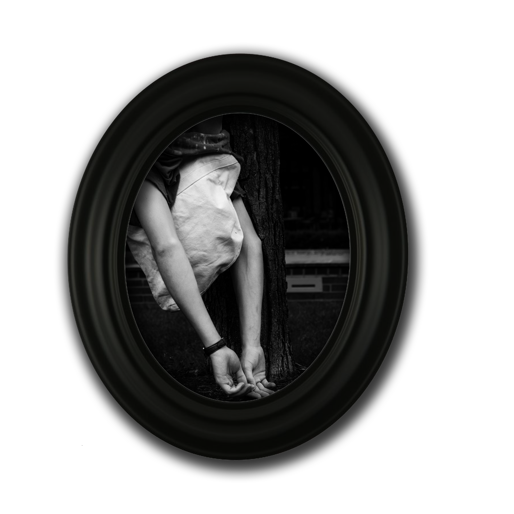
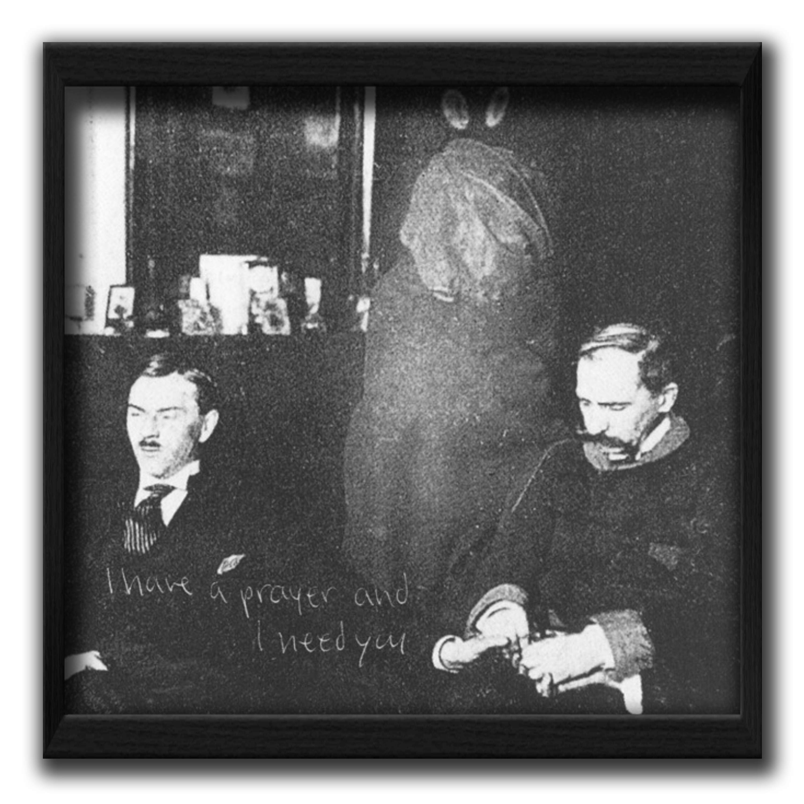

Guide To Seances
1
2
Your first task is to find a bag, tightly weaved but with perforation. Canvas works well, as does thick cotton.

Find a rope or a similiar substitute. Place the bag over your head and tie the rope around your neck, enough that the bag cannot be removed even with force. Sit and breathe for a while. If you begin to panic or seize, your bag is complete, and you should bring it to our next meeting.
3

Join us the ritual site, sit in a circle and wear the hoods. We will sit silently, until one of us has a vision, or a seizure; and then it will spread amongst the group until we're sharing visions, rolling about on the floor, climbing the walls.
4
These rituals are an attempt to breach the haunting spectral gaol and make contact with ghosts. All the world is haunted, because everything has already happened. The world haunts itself. All events are, in fact, ghosts. Copies. Phantoms. Whether they be ghosts of accident or ghosts of coincidence, you will feel them; on your chest, grabbing at your arms and legs, your misery becoming theirs'. This process can be very trying on new minds. Therefore, in the event that another member is haunted by a ghost and becomes violent, he or she must be restrained. DO NOT, however, remove the head device until the ritual is completed.